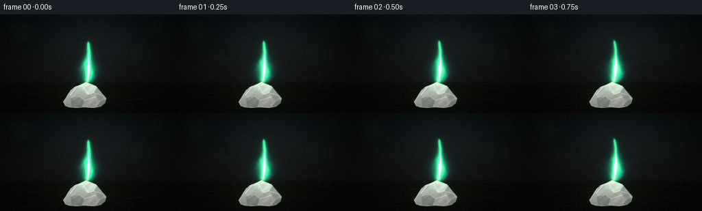
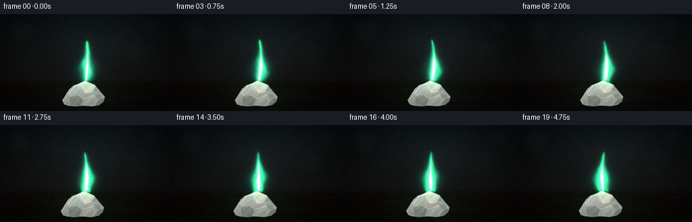
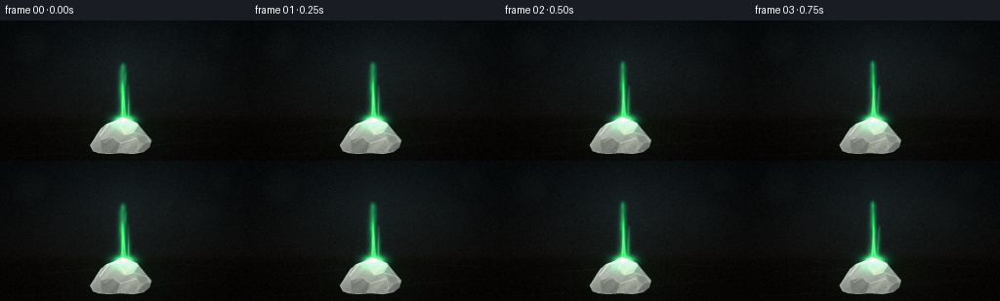
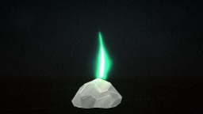
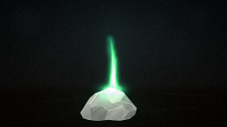
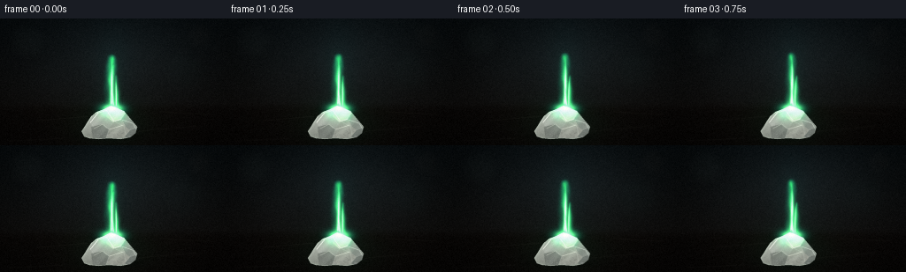
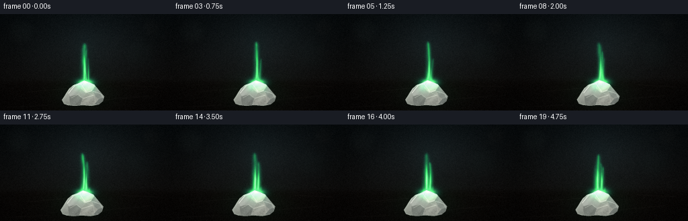
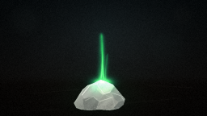
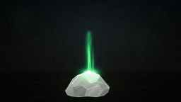

CODING AGENTS AS PIXEL WORLD MODELS
traex/DeepSeek-V4.1-Flash · material_0008
点击播放 · 原生 RGB 像素
逐轮保存的候选
回放视频、检查图与代码变化。
每份候选均可单独播放。实际图片检查记录在下方工具轨迹中。
候选 01播放与检查图
点击播放 · 原生 RGB 像素


展开代码变化
--- 上一保存版本
+++ 本次保存版本
@@ -0,0 +1,403 @@
+"""Procedural RGB render of a steadily burning boric acid crystal.
+
+The scene is rendered at 3x the requested resolution and downsampled at the
+end. Everything is deterministic and uses only local NumPy/PIL/SciPy tools.
+"""
+
+from pathlib import Path
+
+import cv2
+import numpy as np
+from PIL import Image, ImageDraw
+from scipy.ndimage import distance_transform_edt, gaussian_filter
+
+import artifact_io
+
+
+OUT_W, OUT_H = 256, 144
+N_FRAMES = 20
+FPS = 4.0
+SCALE = 3
+W, H = OUT_W * SCALE, OUT_H * SCALE
+
+
+def smoothstep(edge0, edge1, value):
+ x = np.clip((value - edge0) / (edge1 - edge0), 0.0, 1.0)
+ return x * x * (3.0 - 2.0 * x)
+
+
+def rgb(*values):
+ return np.asarray(values, dtype=np.float32)
+
+
+def make_background(xx, yy, rng):
+ """A quiet, close-focus studio surface with a shallow depth of field."""
+ vertical = np.broadcast_to(np.clip(yy / (H / SCALE), 0.0, 1.0), (H, W))
+ top = rgb(0.030, 0.047, 0.055)
+ bottom = rgb(0.072, 0.058, 0.048)
+ bg = top[None, None, :] * (1.0 - vertical[..., None])
+ bg += bottom[None, None, :] * vertical[..., None]
+
+ # A soft, cool pool of ambient light behind the sample.
+ dx = (xx - 135.0) / 82.0
+ dy = (yy - 45.0) / 55.0
+ pool = np.exp(-(dx * dx + dy * dy))
+ bg += pool[..., None] * rgb(0.045, 0.060, 0.064)
+
+ # The tabletop begins in a soft horizontal transition, not a hard line.
+ table = smoothstep(93.0, 107.0, yy)
+ table_color = rgb(0.060, 0.050, 0.043) * (1.0 - vertical[..., None] * 0.55)
+ table_color += np.exp(-((xx - 130.0) / 100.0) ** 2)[..., None] * rgb(
+ 0.018, 0.014, 0.010
+ )
+ bg = bg * (1.0 - table[..., None]) + table_color * table[..., None]
+
+ # Blurred reflections and small out-of-focus highlights give the dark
+ # background some photographic depth without distracting from the flame.
+ for cx, cy, radius, strength, color in [
+ (31.0, 25.0, 17.0, 0.17, rgb(0.10, 0.12, 0.11)),
+ (226.0, 19.0, 12.0, 0.12, rgb(0.12, 0.10, 0.08)),
+ (208.0, 59.0, 20.0, 0.08, rgb(0.05, 0.12, 0.11)),
+ (55.0, 70.0, 25.0, 0.05, rgb(0.08, 0.10, 0.11)),
+ ]:
+ d = np.sqrt((xx - cx) ** 2 + (yy - cy) ** 2)
+ halo = np.exp(-((d / radius) ** 4))
+ bg += halo[..., None] * color * strength
+
+ # Fine grain and a few long scratches in the tabletop.
+ grain = rng.normal(0.0, 1.0, (H // 3, W // 3)).astype(np.float32)
+ grain = cv2.resize(grain, (W, H), interpolation=cv2.INTER_CUBIC)
+ bg += grain[..., None] * 0.006
+
+ scratches = Image.new("RGBA", (W, H), (0, 0, 0, 0))
+ draw = ImageDraw.Draw(scratches)
+ for x0, y0, x1, y1, alpha in [
+ (42, 116, 100, 111, 18),
+ (156, 128, 222, 122, 13),
+ (10, 139, 71, 136, 12),
+ (181, 106, 239, 109, 10),
+ ]:
+ draw.line(
+ (x0 * SCALE, y0 * SCALE, x1 * SCALE, y1 * SCALE),
+ fill=(175, 166, 148, alpha),
+ width=max(1, SCALE // 2),
+ )
+ scratches = gaussian_filter(np.asarray(scratches, np.float32) / 255.0, (1.1, 1.1, 0))
+ bg = bg * (1.0 - scratches[..., 3:4] * 0.24) + scratches[..., :3] * 0.10
+ return np.clip(bg, 0.0, 1.0)
+
+
+def polygon_mask(points):
+ image = Image.new("L", (W, H), 0)
+ draw = ImageDraw.Draw(image)
+ draw.polygon([(int(x * SCALE), int(y * SCALE)) for x, y in points], fill=255)
+ return np.asarray(image, np.float32) / 255.0
+
+
+def make_chunk(rng):
+ """Render a translucent, irregular boric-acid crystal as layered facets."""
+ outline = [
+ (95, 134), (92, 128), (96, 122), (99, 117), (103, 111),
+ (109, 106), (117, 103), (125, 99), (133, 102), (140, 105),
+ (145, 111), (150, 117), (155, 123), (153, 130), (147, 135),
+ (136, 137), (123, 136), (111, 137), (101, 136),
+ ]
+ mask = polygon_mask(outline)
+
+ xx = np.arange(W, dtype=np.float32)[None, :] / SCALE
+ yy = np.arange(H, dtype=np.float32)[:, None] / SCALE
+ edge_distance = distance_transform_edt(mask > 0.5) / SCALE
+ rim = np.exp(-edge_distance / 0.95) * mask
+
+ # Slightly translucent body with a cool upper-left and warmer underside.
+ grad = np.broadcast_to(np.clip((yy - 100.0) / 36.0, 0.0, 1.0), (H, W))
+ body = rgb(0.79, 0.81, 0.77) * (1.0 - grad[..., None])
+ body += rgb(0.58, 0.60, 0.56) * grad[..., None]
+ body += rim[..., None] * rgb(0.18, 0.21, 0.19)
+
+ facets = [
+ ([(101, 117), (105, 109), (115, 105), (121, 111), (115, 121), (106, 125)],
+ rgb(0.83, 0.85, 0.81), 0.90),
+ ([(120, 111), (126, 100), (134, 103), (141, 107), (136, 115), (128, 118)],
+ rgb(0.94, 0.94, 0.87), 0.96),
+ ([(137, 115), (142, 107), (150, 117), (155, 124), (147, 127), (140, 121)],
+ rgb(0.73, 0.77, 0.73), 0.80),
+ ([(103, 123), (116, 120), (123, 126), (119, 136), (105, 136)],
+ rgb(0.69, 0.72, 0.68), 0.76),
+ ([(123, 126), (129, 117), (138, 115), (142, 123), (147, 127),
+ (142, 134), (133, 136), (120, 135)],
+ rgb(0.82, 0.83, 0.78), 0.87),
+ ([(147, 127), (155, 124), (153, 131), (146, 136), (141, 134)],
+ rgb(0.63, 0.67, 0.64), 0.72),
+ ]
+
+ facet_layer = np.zeros((H, W, 3), np.float32)
+ facet_alpha = np.zeros((H, W, 1), np.float32)
+ for points, color, shade in facets:
+ pm = polygon_mask(points)
+ # Give each planar facet a tiny internal gradient.
+ n = np.clip(0.94 + 0.06 * np.sin((xx + yy) * 0.37), 0.9, 1.0)
+ facet_layer = facet_layer * (1.0 - pm[..., None]) + (
+ color[None, None, :] * shade * n[..., None]
+ ) * pm[..., None]
+ facet_alpha = np.maximum(facet_alpha, pm[..., None] * 0.78)
+ body = body * (1.0 - facet_alpha) + facet_layer * facet_alpha
+
+ # Thin mineral cleavages catch a little light along the top and left.
+ lines = Image.new("RGBA", (W, H), (0, 0, 0, 0))
+ draw = ImageDraw.Draw(lines)
+ for pts, color, width, alpha in [
+ ([(102, 118), (111, 107), (120, 104), (126, 100)], (235, 238, 222), 2, 150),
+ ([(120, 104), (129, 117), (137, 114)], (242, 243, 227), 1, 105),
+ ([(106, 125), (116, 120), (123, 126), (139, 121)], (225, 226, 209), 1, 100),
+ ([(138, 115), (150, 119), (154, 126)], (209, 216, 204), 1, 85),
+ ([(116, 121), (123, 126), (120, 135)], (105, 111, 106), 1, 105),
+ ([(129, 117), (140, 122), (142, 132)], (112, 118, 112), 1, 90),
+ ]:
+ draw.line(
+ [(int(x * SCALE), int(y * SCALE)) for x, y in pts],
+ fill=(*color, alpha),
+ width=width,
+ joint="curve",
+ )
+ lines_arr = gaussian_filter(np.asarray(lines, np.float32) / 255.0, (0.7, 0.7, 0))
+ body = body * (1.0 - lines_arr[..., 3:4] * 0.75) + lines_arr[..., :3] * 0.75
+
+ # Tiny granular boric-acid flakes and a thin dusting around the base.
+ grain = rng.normal(0.0, 1.0, (H, W)).astype(np.float32)
+ grain = gaussian_filter(grain, 0.7)
+ body += grain[..., None] * mask[..., None] * 0.018
+
+ dust = Image.new("RGBA", (W, H), (0, 0, 0, 0))
+ draw = ImageDraw.Draw(dust)
+ for _ in range(105):
+ cx = rng.normal(126.0, 24.0)
+ cy = rng.normal(134.0, 3.0)
+ if 88 < cx < 165 and 126 < cy < 141:
+ radius = rng.uniform(0.35, 1.15)
+ shade = int(rng.uniform(140, 205))
+ alpha = int(rng.uniform(40, 120))
+ draw.ellipse(
+ (
+ (cx - radius) * SCALE,
+ (cy - radius * 0.6) * SCALE,
+ (cx + radius) * SCALE,
+ (cy + radius * 0.6) * SCALE,
+ ),
+ fill=(shade, shade + 3, shade - 2, alpha),
+ )
+ dust_arr = gaussian_filter(np.asarray(dust, np.float32) / 255.0, (1.1, 1.1, 0))
+ body = body * (1.0 - dust_arr[..., 3:4]) + dust_arr[..., :3] * dust_arr[..., 3:4]
+
+ # Contact shadow and a faint green bounce are composited separately.
+ return np.clip(body, 0.0, 1.0), mask
+
+
+def noise_field(xx, yy, t, phase=0.0):
+ """Small multi-scale analytic noise, continuous in both space and time."""
+ n = (
+ 0.58 * np.sin(0.092 * xx + 0.060 * yy + 0.71 * t + phase)
+ + 0.31 * np.sin(0.188 * xx - 0.143 * yy - 1.13 * t + 1.7 + phase)
+ + 0.18 * np.sin(0.343 * xx + 0.256 * yy + 1.77 * t + 4.0 - phase)
+ + 0.10 * np.sin(0.625 * xx - 0.491 * yy - 2.51 * t + 2.3 + phase)
+ )
+ return n / 1.17
+
+
+def render_flame(xx, yy, t, rng):
+ """Return emission RGB, core mask, and flame envelope at render scale."""
+ base_x = 127.0 + 0.9 * np.sin(0.53 * t + 0.2)
+ base_y = 101.5
+ height = 59.0 + 3.4 * np.sin(0.68 * t + 0.4) + 1.6 * np.sin(1.43 * t + 1.1)
+
+ h = (base_y - yy) / height
+ hc = np.clip(h, 0.0, 1.0)
+ center = (
+ base_x
+ + 3.7 * np.sin(0.72 * t + 0.5) * np.sin(np.pi * hc) ** 0.8
+ + 1.35 * np.sin(1.41 * t + 1.5) * hc ** 1.7
+ )
+
+ # A broad lower body, a narrowing shoulder, and a fine wavering tip.
+ width = (1.0 - hc) ** 0.28 * (
+ 5.0 + 10.5 * np.exp(-((hc - 0.34) / 0.29) ** 2)
+ )
+ width *= 1.0 + 0.055 * np.sin(1.37 * t + hc * 4.1)
+
+ n1 = noise_field(xx, yy, t, 0.3)
+ n2 = noise_field(xx * 1.8, yy * 1.35, t, 2.1)
+ edge_warp = 0.18 * n1 + 0.09 * n2
+ d = np.abs(xx - center) / np.maximum(width, 0.35)
+ envelope = np.clip(1.0 - d + edge_warp, 0.0, 1.0) ** 1.35
+ envelope *= smoothstep(-0.01, 0.055, h)
+ envelope *= 1.0 - smoothstep(0.94, 1.06, h)
+
+ # Vertical flame tongues and curling detail inside the outer envelope.
+ tongue = 0.53 + 0.47 * np.clip(
+ 0.5 + 0.7 * n1 + 0.38 * np.sin(0.34 * xx - 0.21 * yy - 2.9 * t),
+ 0.0,
+ 1.0,
+ )
+ envelope *= 0.52 + 0.72 * tongue
+
+ # A separate hot core is offset slightly toward the base.
+ core_center = center - 0.7 * np.sin(1.1 * t + 0.3) * (1.0 - hc)
+ core_width = np.maximum(1.0, width * (0.28 + 0.11 * np.sin(0.9 * t)))
+ core = np.clip(1.0 - np.abs(xx - core_center) / core_width + 0.10 * n2, 0.0, 1.0)
+ core = core ** 2.0 * (1.0 - smoothstep(0.48, 0.98, h))
+ core *= smoothstep(0.015, 0.10, h)
+ core *= 0.72 + 0.28 * np.clip(0.5 + 0.5 * n1, 0.0, 1.0)
+
+ # Two short side licks at the contact point make the flame wrap the sample.
+ for side, phase in [(-1.0, 0.4), (1.0, 1.7)]:
+ lx = base_x + side * (7.0 + 2.0 * np.sin(0.9 * t + phase))
+ ly = base_y + 2.0 + 7.0 * np.sin(0.82 * t + phase)
+ rx = (xx - lx) / (3.0 + 1.3 * np.sin(0.77 * t + 1.2))
+ ry = (yy - ly) / 5.0
+ lick = np.exp(-(rx * rx + ry * ry) * 1.8)
+ envelope += 0.34 * lick
+ core += 0.08 * lick * (yy < base_y + 7.0)
+
+ envelope = np.clip(envelope, 0.0, 1.0)
+ core = np.clip(core, 0.0, 1.0)
+
+ # Vivid boron-green flame: dark teal rim, electric green body, pale lime core.
+ outer = rgb(0.015, 0.55, 0.43)
+ body = rgb(0.16, 1.00, 0.38)
+ hot = rgb(0.83, 1.00, 0.52)
+ color = outer[None, None, :] * (1.0 - envelope[..., None])
+ color += body[None, None, :] * envelope[..., None]
+ color = color * (1.0 - 0.83 * core[..., None]) + hot[None, None, :] * (
+ 0.83 * core[..., None]
+ )
+
+ emission = color * (0.72 * envelope + 1.35 * core)[..., None]
+ # A faint blue-green halo is visible outside the hottest part of the flame.
+ halo = np.exp(-np.maximum(d - 0.8, 0.0) * 2.4) * (1.0 - smoothstep(0.82, 1.18, h))
+ halo *= smoothstep(-0.02, 0.08, h)
+ emission += halo[..., None] * rgb(0.015, 0.18, 0.18) * 0.33
+
+ return np.clip(emission, 0.0, 2.5), np.clip(core, 0.0, 1.0), np.clip(envelope, 0.0, 1.0)
+
+
+def composite_frame(frame_index, background, chunk, chunk_mask, rng):
+ t = frame_index / FPS
+ xx = np.arange(W, dtype=np.float32)[None, :] / SCALE
+ yy = np.arange(H, dtype=np.float32)[:, None] / SCALE
+
+ image = background.copy()
+
+ # Soft ambient occlusion below the crystal.
+ contact = np.exp(
+ -(((xx - 126.0) / 31.0) ** 2 + ((yy - 134.0) / 4.3) ** 2)
+ )
+ image *= 1.0 - 0.43 * contact[..., None]
+
+ emission, core, envelope = render_flame(xx, yy, t, rng)
+
+ # Green light from the flame catches the upper facets and the tabletop.
+ glow = gaussian_filter(emission, (12.0, 12.0, 0.0))
+ glow_wide = gaussian_filter(emission, (28.0, 28.0, 0.0))
+ bounce = np.exp(
+ -(((xx - 126.0) / 43.0) ** 2 + ((yy - 118.0) / 25.0) ** 2)
+ )
+ image += bounce[..., None] * rgb(0.010, 0.085, 0.050) * 0.62
+
+ lit_chunk = chunk.copy()
+ light_on_chunk = np.clip(glow / 0.42, 0.0, 1.0)
+ lit_chunk += (
+ light_on_chunk * rgb(0.08, 0.43, 0.23)[None, None, :]
+ * chunk_mask[..., None]
+ )
+ lit_chunk += (
+ np.clip(glow_wide / 0.25, 0.0, 1.0)
+ * rgb(0.025, 0.12, 0.07)[None, None, :]
+ * chunk_mask[..., None]
+ )
+ lit_chunk = np.clip(lit_chunk, 0.0, 1.0)
+ image = image * (1.0 - chunk_mask[..., None]) + lit_chunk * chunk_mask[..., None]
+
+ # Flame is added in a screen-like blend so the hot core remains luminous.
+ emission_gain = 1.0 + 0.035 * np.sin(2.1 * t + 0.8) + 0.018 * np.sin(4.3 * t + 1.7)
+ small_bloom = gaussian_filter(emission, (4.0, 4.0, 0.0))
+ medium_bloom = gaussian_filter(emission, (10.0, 10.0, 0.0))
+ wide_bloom = gaussian_filter(emission, (23.0, 23.0, 0.0))
+ add = (
+ emission * emission_gain
+ + small_bloom * 0.85
+ + medium_bloom * 0.55
+ + wide_bloom * 0.24
+ )
+ image = 1.0 - (1.0 - np.clip(image, 0.0, 1.0)) * (1.0 - np.clip(add, 0.0, 0.98))
+
+ # A tiny amber point at the ignition seam keeps the green flame grounded.
+ seam = np.exp(
+ -(((xx - 127.3) / 2.2) ** 2 + ((yy - 102.0) / 1.1) ** 2)
+ )
+ image += seam[..., None] * rgb(0.62, 0.28, 0.045) * 0.34
+
+ # Subtle smoke and heat haze high above the flame.
+ smoke_band = smoothstep(20.0, 48.0, yy) * (1.0 - smoothstep(48.0, 87.0, yy))
+ smoke = np.clip(
+ 0.5
+ + 0.33 * noise_field(xx * 0.63, yy * 0.62, t * 0.72, 1.2)
+ + 0.16 * noise_field(xx * 1.25, yy * 1.1, t * 0.55, 3.0),
+ 0.0,
+ 1.0,
+ )
+ smoke *= smoke_band * (1.0 - smoothstep(70.0, 105.0, yy))
+ smoke *= np.exp(-((xx - 132.0) / 31.0) ** 2)
+ image += smoke[..., None] * rgb(0.035, 0.055, 0.050) * 0.20
+
+ # Gentle highlight and vignette shaped for a macro photograph.
+ dx = (xx - 126.0) / 130.0
+ dy = (yy - 73.0) / 92.0
+ vignette = np.clip(1.0 - 0.22 * (dx * dx + dy * dy), 0.74, 1.0)
+ image *= vignette[..., None]
+ return np.clip(image, 0.0, 1.0)
+
+
+def main():
+ case_dir = Path(__file__).resolve().parent
+ rng = np.random.default_rng(20261111)
+
+ xx = np.arange(W, dtype=np.float32)[None, :] / SCALE
+ yy = np.arange(H, dtype=np.float32)[:, None] / SCALE
+ background = make_background(xx, yy, rng)
+ chunk, chunk_mask = make_chunk(rng)
+
+ frames = []
+ for index in range(N_FRAMES):
+ frame = composite_frame(index, background, chunk, chunk_mask, rng)
+ # Slow, very small push-in adds depth to the otherwise locked-off macro.
+ progress = index / (N_FRAMES - 1)
+ zoom = 1.0 + 0.022 * progress
+ matrix = cv2.getRotationMatrix2D((W * 0.50, H * 0.58), 0.0, zoom)
+ matrix[:, 2] += np.array([W * 0.5, H * 0.58]) - matrix[:, :2] @ np.array(
+ [W * 0.5, H * 0.58]
+ )
+ frame = cv2.warpAffine(
+ frame,
+ matrix,
+ (W, H),
+ flags=cv2.INTER_LINEAR,
+ borderMode=cv2.BORDER_REFLECT,
+ )
+
+ # A restrained final grain keeps the downsampled image from looking
+ # synthetic without obscuring the small details.
+ grain = rng.normal(0.0, 1.0, (OUT_H, OUT_W)).astype(np.float32)
+ frame8 = np.clip(frame * 255.0, 0, 255).astype(np.uint8)
+ frame8 = cv2.resize(frame8, (OUT_W, OUT_H), interpolation=cv2.INTER_AREA)
+ frame_float = frame8.astype(np.float32) / 255.0
+ frame_float += grain[..., None] * 0.006
+ frame8 = np.clip(frame_float * 255.0, 0, 255).astype(np.uint8)
+ frames.append(frame8)
+
+ frames = np.stack(frames, axis=0)
+ artifact_io.save(frames, case_dir)
+ print(f"saved {len(frames)} frames to {case_dir}")
+
+
+if __name__ == "__main__":
+ main()
候选 02播放与检查图
点击播放 · 原生 RGB 像素

展开代码变化
--- 上一保存版本
+++ 本次保存版本
@@ -208,55 +208,77 @@
"""Return emission RGB, core mask, and flame envelope at render scale."""
base_x = 127.0 + 0.9 * np.sin(0.53 * t + 0.2)
base_y = 101.5
- height = 59.0 + 3.4 * np.sin(0.68 * t + 0.4) + 1.6 * np.sin(1.43 * t + 1.1)
-
- h = (base_y - yy) / height
- hc = np.clip(h, 0.0, 1.0)
- center = (
- base_x
- + 3.7 * np.sin(0.72 * t + 0.5) * np.sin(np.pi * hc) ** 0.8
- + 1.35 * np.sin(1.41 * t + 1.5) * hc ** 1.7
- )
-
- # A broad lower body, a narrowing shoulder, and a fine wavering tip.
- width = (1.0 - hc) ** 0.28 * (
- 5.0 + 10.5 * np.exp(-((hc - 0.34) / 0.29) ** 2)
- )
- width *= 1.0 + 0.055 * np.sin(1.37 * t + hc * 4.1)
-
n1 = noise_field(xx, yy, t, 0.3)
n2 = noise_field(xx * 1.8, yy * 1.35, t, 2.1)
- edge_warp = 0.18 * n1 + 0.09 * n2
- d = np.abs(xx - center) / np.maximum(width, 0.35)
- envelope = np.clip(1.0 - d + edge_warp, 0.0, 1.0) ** 1.35
- envelope *= smoothstep(-0.01, 0.055, h)
- envelope *= 1.0 - smoothstep(0.94, 1.06, h)
-
- # Vertical flame tongues and curling detail inside the outer envelope.
- tongue = 0.53 + 0.47 * np.clip(
- 0.5 + 0.7 * n1 + 0.38 * np.sin(0.34 * xx - 0.21 * yy - 2.9 * t),
- 0.0,
- 1.0,
- )
- envelope *= 0.52 + 0.72 * tongue
-
- # A separate hot core is offset slightly toward the base.
- core_center = center - 0.7 * np.sin(1.1 * t + 0.3) * (1.0 - hc)
- core_width = np.maximum(1.0, width * (0.28 + 0.11 * np.sin(0.9 * t)))
- core = np.clip(1.0 - np.abs(xx - core_center) / core_width + 0.10 * n2, 0.0, 1.0)
- core = core ** 2.0 * (1.0 - smoothstep(0.48, 0.98, h))
- core *= smoothstep(0.015, 0.10, h)
- core *= 0.72 + 0.28 * np.clip(0.5 + 0.5 * n1, 0.0, 1.0)
+ envelope = np.zeros((H, W), np.float32)
+ core = np.zeros((H, W), np.float32)
+
+ # Three overlapping tongues give the flame a tapered, slightly forked
+ # silhouette while retaining one coherent base at the crystal.
+ tongues = [
+ # x offset, height, width, sway, phase
+ (-2.2, 59.0, 10.8, 2.5, 0.4),
+ (1.7, 48.0, 9.2, -2.1, 1.7),
+ (4.2, 39.0, 6.5, 1.7, 3.0),
+ ]
+ for index, (offset, height, broad, sway, phase) in enumerate(tongues):
+ local_height = height * (
+ 1.0 + 0.052 * np.sin(0.73 * t + phase)
+ + 0.022 * np.sin(1.81 * t + phase * 1.3)
+ )
+ h = (base_y - yy) / local_height
+ hc = np.clip(h, 0.0, 1.0)
+ center = (
+ base_x + offset
+ + sway * np.sin(0.66 * t + phase) * np.sin(np.pi * hc) ** 0.72
+ + (1.2 + 0.35 * index) * np.sin(1.47 * t + phase * 2.0) * hc ** 2.1
+ )
+ width = broad * (1.0 - hc) ** (0.22 + 0.045 * index)
+ width *= 1.0 + 0.055 * np.sin(1.37 * t + hc * 4.1 + phase)
+ edge_warp = 0.19 * n1 + 0.09 * n2
+ d = np.abs(xx - center) / np.maximum(width, 0.35)
+ lobe = np.clip(1.0 - d + edge_warp, 0.0, 1.0) ** 1.55
+ lobe *= smoothstep(-0.015, 0.055, h)
+ lobe *= 1.0 - smoothstep(0.91, 1.04, h)
+
+ # A few fine vertical striations read as gaseous structure.
+ striation = 0.70 + 0.30 * np.clip(
+ 0.5 + 0.70 * np.sin(0.72 * xx - 0.09 * yy - 3.2 * t + phase)
+ + 0.35 * n2,
+ 0.0,
+ 1.0,
+ )
+ lobe *= striation
+ envelope = np.maximum(envelope, lobe)
+
+ local_core = np.clip(
+ 1.0 - np.abs(xx - (center - offset * 0.10)) / np.maximum(0.85, width * 0.28)
+ + 0.08 * n2,
+ 0.0,
+ 1.0,
+ )
+ local_core **= 2.3
+ local_core *= smoothstep(0.015, 0.10, h)
+ local_core *= 1.0 - smoothstep(0.48, 0.98, h)
+ local_core *= 0.78 + 0.22 * np.clip(0.5 + 0.5 * n1, 0.0, 1.0)
+ core = np.maximum(core, local_core)
+
+ # Soften the contact area into one continuous burning pool.
+ root = np.exp(
+ -(((xx - base_x) / 11.0) ** 2 + ((yy - (base_y + 1.0)) / 5.3) ** 2)
+ )
+ envelope = np.maximum(envelope, root * 0.84)
+ core = np.maximum(core, root * 0.58)
# Two short side licks at the contact point make the flame wrap the sample.
for side, phase in [(-1.0, 0.4), (1.0, 1.7)]:
- lx = base_x + side * (7.0 + 2.0 * np.sin(0.9 * t + phase))
+ lx = base_x + side * (8.0 + 1.8 * np.sin(0.9 * t + phase))
ly = base_y + 2.0 + 7.0 * np.sin(0.82 * t + phase)
- rx = (xx - lx) / (3.0 + 1.3 * np.sin(0.77 * t + 1.2))
- ry = (yy - ly) / 5.0
- lick = np.exp(-(rx * rx + ry * ry) * 1.8)
- envelope += 0.34 * lick
- core += 0.08 * lick * (yy < base_y + 7.0)
+ rx = (xx - lx) / (3.4 + 1.0 * np.sin(0.77 * t + 1.2))
+ ry = (yy - ly) / 5.7
+ lick = np.exp(-(rx * rx + ry * ry) * 1.65)
+ envelope = np.maximum(envelope, lick * 0.68)
+ core = np.maximum(core, lick * 0.055 * (yy < base_y + 7.0))
envelope = np.clip(envelope, 0.0, 1.0)
core = np.clip(core, 0.0, 1.0)
@@ -271,11 +293,11 @@
0.83 * core[..., None]
)
- emission = color * (0.72 * envelope + 1.35 * core)[..., None]
+ emission = color * (0.64 * envelope + 1.23 * core)[..., None]
# A faint blue-green halo is visible outside the hottest part of the flame.
- halo = np.exp(-np.maximum(d - 0.8, 0.0) * 2.4) * (1.0 - smoothstep(0.82, 1.18, h))
- halo *= smoothstep(-0.02, 0.08, h)
- emission += halo[..., None] * rgb(0.015, 0.18, 0.18) * 0.33
+ halo = np.exp(-((xx - base_x) / 19.0) ** 2 - ((yy - 64.0) / 53.0) ** 2)
+ halo *= 0.55 + 0.45 * envelope
+ emission += halo[..., None] * rgb(0.010, 0.12, 0.12) * 0.20
return np.clip(emission, 0.0, 2.5), np.clip(core, 0.0, 1.0), np.clip(envelope, 0.0, 1.0)
@@ -319,14 +341,14 @@
# Flame is added in a screen-like blend so the hot core remains luminous.
emission_gain = 1.0 + 0.035 * np.sin(2.1 * t + 0.8) + 0.018 * np.sin(4.3 * t + 1.7)
- small_bloom = gaussian_filter(emission, (4.0, 4.0, 0.0))
- medium_bloom = gaussian_filter(emission, (10.0, 10.0, 0.0))
- wide_bloom = gaussian_filter(emission, (23.0, 23.0, 0.0))
+ small_bloom = gaussian_filter(emission, (3.2, 3.2, 0.0))
+ medium_bloom = gaussian_filter(emission, (8.0, 8.0, 0.0))
+ wide_bloom = gaussian_filter(emission, (19.0, 19.0, 0.0))
add = (
emission * emission_gain
- + small_bloom * 0.85
- + medium_bloom * 0.55
- + wide_bloom * 0.24
+ + small_bloom * 0.58
+ + medium_bloom * 0.34
+ + wide_bloom * 0.12
)
image = 1.0 - (1.0 - np.clip(image, 0.0, 1.0)) * (1.0 - np.clip(add, 0.0, 0.98))
候选 03播放与检查图
候选 04播放与检查图
点击播放 · 原生 RGB 像素


展开代码变化
--- 上一保存版本
+++ 本次保存版本
@@ -206,22 +206,21 @@
def render_flame(xx, yy, t, rng):
"""Return emission RGB, core mask, and flame envelope at render scale."""
- base_x = 127.0 + 0.9 * np.sin(0.53 * t + 0.2)
+ base_x = 127.0 + 0.55 * np.sin(0.53 * t + 0.2)
base_y = 101.5
n1 = noise_field(xx, yy, t, 0.3)
n2 = noise_field(xx * 1.8, yy * 1.35, t, 2.1)
envelope = np.zeros((H, W), np.float32)
core = np.zeros((H, W), np.float32)
- # Three overlapping tongues give the flame a tapered, slightly forked
- # silhouette while retaining one coherent base at the crystal.
+ # Layered tongues give the flame a tapered, slightly forked silhouette.
tongues = [
- # x offset, height, width, sway, phase
- (-2.2, 59.0, 10.8, 2.5, 0.4),
- (1.7, 48.0, 9.2, -2.1, 1.7),
- (4.2, 39.0, 6.5, 1.7, 3.0),
+ # x offset, height, width, sway, phase, weight
+ (-2.6, 57.0, 9.0, 2.2, 0.4, 0.94),
+ (1.8, 47.0, 7.0, -1.7, 1.7, 0.78),
+ (4.4, 37.0, 4.8, 1.3, 3.0, 0.64),
]
- for index, (offset, height, broad, sway, phase) in enumerate(tongues):
+ for index, (offset, height, broad, sway, phase, weight) in enumerate(tongues):
local_height = height * (
1.0 + 0.052 * np.sin(0.73 * t + phase)
+ 0.022 * np.sin(1.81 * t + phase * 1.3)
@@ -235,9 +234,9 @@
)
width = broad * (1.0 - hc) ** (0.22 + 0.045 * index)
width *= 1.0 + 0.055 * np.sin(1.37 * t + hc * 4.1 + phase)
- edge_warp = 0.19 * n1 + 0.09 * n2
+ edge_warp = 0.13 * n1 + 0.055 * n2
d = np.abs(xx - center) / np.maximum(width, 0.35)
- lobe = np.clip(1.0 - d + edge_warp, 0.0, 1.0) ** 1.55
+ lobe = np.clip(1.0 - d + edge_warp, 0.0, 1.0) ** 1.65
lobe *= smoothstep(-0.015, 0.055, h)
lobe *= 1.0 - smoothstep(0.91, 1.04, h)
@@ -248,27 +247,27 @@
0.0,
1.0,
)
- lobe *= striation
+ lobe *= striation * weight
envelope = np.maximum(envelope, lobe)
local_core = np.clip(
- 1.0 - np.abs(xx - (center - offset * 0.10)) / np.maximum(0.85, width * 0.28)
+ 1.0 - np.abs(xx - (center - offset * 0.10)) / np.maximum(0.70, width * 0.23)
+ 0.08 * n2,
0.0,
1.0,
)
local_core **= 2.3
local_core *= smoothstep(0.015, 0.10, h)
- local_core *= 1.0 - smoothstep(0.48, 0.98, h)
+ local_core *= 1.0 - smoothstep(0.30, 0.75, h)
local_core *= 0.78 + 0.22 * np.clip(0.5 + 0.5 * n1, 0.0, 1.0)
- core = np.maximum(core, local_core)
+ core = np.maximum(core, local_core * weight)
# Soften the contact area into one continuous burning pool.
root = np.exp(
-(((xx - base_x) / 11.0) ** 2 + ((yy - (base_y + 1.0)) / 5.3) ** 2)
)
- envelope = np.maximum(envelope, root * 0.84)
- core = np.maximum(core, root * 0.58)
+ envelope = np.maximum(envelope, root * 0.80)
+ core = np.maximum(core, root * 0.56)
# Two short side licks at the contact point make the flame wrap the sample.
for side, phase in [(-1.0, 0.4), (1.0, 1.7)]:
@@ -277,27 +276,28 @@
rx = (xx - lx) / (3.4 + 1.0 * np.sin(0.77 * t + 1.2))
ry = (yy - ly) / 5.7
lick = np.exp(-(rx * rx + ry * ry) * 1.65)
- envelope = np.maximum(envelope, lick * 0.68)
+ envelope = np.maximum(envelope, lick * 0.58)
core = np.maximum(core, lick * 0.055 * (yy < base_y + 7.0))
envelope = np.clip(envelope, 0.0, 1.0)
core = np.clip(core, 0.0, 1.0)
+ core = gaussian_filter(core, 1.1)
# Vivid boron-green flame: dark teal rim, electric green body, pale lime core.
- outer = rgb(0.015, 0.55, 0.43)
- body = rgb(0.16, 1.00, 0.38)
- hot = rgb(0.83, 1.00, 0.52)
+ outer = rgb(0.008, 0.46, 0.36)
+ body = rgb(0.12, 0.96, 0.31)
+ hot = rgb(0.70, 1.00, 0.44)
color = outer[None, None, :] * (1.0 - envelope[..., None])
color += body[None, None, :] * envelope[..., None]
- color = color * (1.0 - 0.83 * core[..., None]) + hot[None, None, :] * (
- 0.83 * core[..., None]
- )
-
- emission = color * (0.64 * envelope + 1.23 * core)[..., None]
+ color = color * (1.0 - 0.72 * core[..., None]) + hot[None, None, :] * (
+ 0.72 * core[..., None]
+ )
+
+ emission = color * (0.58 * envelope + 1.10 * core)[..., None]
# A faint blue-green halo is visible outside the hottest part of the flame.
halo = np.exp(-((xx - base_x) / 19.0) ** 2 - ((yy - 64.0) / 53.0) ** 2)
- halo *= 0.55 + 0.45 * envelope
- emission += halo[..., None] * rgb(0.010, 0.12, 0.12) * 0.20
+ halo *= 0.46 + 0.54 * envelope
+ emission += halo[..., None] * rgb(0.006, 0.085, 0.09) * 0.13
return np.clip(emission, 0.0, 2.5), np.clip(core, 0.0, 1.0), np.clip(envelope, 0.0, 1.0)
可观测工具轨迹
实际执行的命令与返回图片。
命令 1exit 0
/bin/bash -c "pwd && rg --files -g '"'!*.mp4'"' -g '"'!*.mov'"' | sed -n '1,200p'"
命令 2exit 0
/bin/bash -c "sed -n '1,240p' prompt.txt"
命令 3exit 0
/bin/bash -c 'cat task_spec.json'
命令 4exit 0
/bin/bash -c "sed -n '1,260p' GENERATION_RULES.md"
命令 5exit 0
/bin/bash -c "find . -maxdepth 2 -type f -printf '%p %s bytes\\n' | sort | sed -n '1,240p'"
命令 6exit 0
/bin/bash -c "sed -n '1,260p' artifact_io.py"
命令 7exit 0
/bin/bash -c "sed -n '1,260p' player_template.html"
命令 8exit 0
/bin/bash -c "python3 - <<'PY' import importlib.util for m in ['numpy','PIL','cv2','scipy','imageio','matplotlib']: print(m, bool(importlib.util.find_spec(m))) PY"
命令 9exit 0
/bin/bash -c 'which ffmpeg ffprobe || true'
命令 10exit 1
/bin/bash -c 'python3 generate.py'
命令 11exit 1
/bin/bash -c 'python3 generate.py'
命令 12exit 1
/bin/bash -c 'python3 generate.py'
命令 13exit 1
/bin/bash -c 'python3 generate.py'
命令 14exit 0
/bin/bash -c 'python3 generate.py'
命令 15exit 0
/bin/bash -c 'cp inspection.png candidate_01_inspection.png'
命令 16exit 0
/bin/bash -c "sed -n '160,345p' generate.py"
命令 17exit 0
/bin/bash -c 'mkdir -p candidates/candidate_01 && cp -r frames inspection.png transition_check.png pixels.npz index.html candidates/candidate_01/'
命令 18exit 0
/bin/bash -c 'python3 generate.py'
命令 19exit 0
/bin/bash -c 'mkdir -p candidates/candidate_02 && cp -r frames inspection.png transition_check.png pixels.npz index.html candidates/candidate_02/'
命令 20exit 0
/bin/bash -c 'python3 generate.py'
命令 21exit 0
/bin/bash -c "python3 - <<'PY'
from PIL import Image
import numpy as np
for i in range(20):
a=np.asarray(Image.open(f'frames/{i:02d}.png')).astype(float)
print(i, 'mean', a.mean().round(2), 'max', a.max(), 'green_px', ((a[:,:,1]>180)&(a[:,:,1]>a[:,:,0]*1.2)&(a[:,:,1]>a[:,:,2]*1.1)).sum())
PY"视觉工具实际返回图片 1

视觉工具实际返回图片 2

视觉工具实际返回图片 3

视觉工具实际返回图片 4

视觉工具实际返回图片 5

视觉工具实际返回图片 6

视觉工具实际返回图片 7

视觉工具实际返回图片 8

保存候选 4 份；完成命令 21 次；可验证图片返回 8 张。原始 API 响应与完整日志保留在本地。